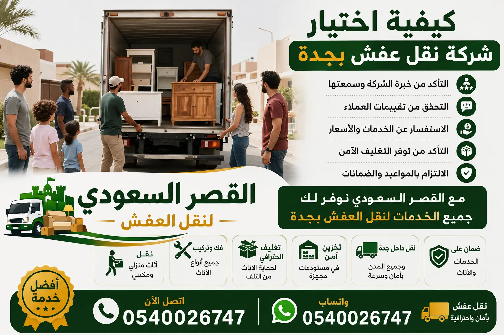

كيفية اختيار شركة نقل عفش: دليلك الكامل لاختيار افضل شركة نقل اثاث في جدة
إن كيفية اختيار شركة نقل عفش من أهم القرارات التي تواجه العائلات والشركات عند الانتقال إلى منزل جديد. مع كثرة شركات نقل الأثاث في جدة، يصبح من الصعب تحديد افضل شركة نقل اثاث تقدم خدمات موثوقة بأسعار مناسبة. في هذا الدليل الشامل من شركة القصر السعودي، نضع بين يديك المعايير الأساسية لاختيار الناقل المناسب، بدءًا من التحقق من التراخيص والتأمين، مرورًا بجودة العمالة والتغليف، وصولاً إلى قراءة تقييمات العملاء السابقين. تعتبر معايير اختيار شركة نقل عفش عديدة، لكن أبرزها: الخبرة في المجال، وجود فريق متخصص لفك وتركيب الأثاث، استخدام سيارات مجهزة حديثًا، وتقديم ضمان ضد الكسر. في هذا الدليل ستتعلم أيضًا كيفية مقارنة أسعار نقل الاثاث بطريقة ذكية لتجنب الرسوم الخفية. سواء كنت تبحث عن شركة نقل عفش رخيصة أو شركة نقل اثاث فاخرة، فإن المعلومات التالية ستساعدك على اتخاذ القرار الصحيح. ننصحك بزيارة أفضل شركة نقل عفش في جدة للتعرف على تجارب حقيقية. تذكر أن اختيار افضل شركة نقل اثاث يوفر عليك الوقت والجهد ويحمي أثاثك من التلف. اقرأ هذا الدليل بعناية واستفد من خبرتنا التي تزيد عن 18 عامًا في مجال نقل العفش بجدة.

معايير اختيار شركة نقل عفش محترفة: 7 خطوات أساسية لاختيار افضل شركة نقل اثاث
عند البحث عن كيفية اختيار شركة نقل عفش، يجب الانتباه إلى 7 معايير رئيسية. أولاً: الخبرة والسمعة – اختر شركة لها سجل حافل في مجال نقل الأثاث، مثل شركة نقل عفش جدة ذات الخبرة الطويلة. ثانيًا: التأمين والضمان – تأكد من أن الشركة تقدم تأمينًا ضد الكسر والضياع. ثالثًا: جودة التغليف – يجب أن تستخدم الشركة مواد تغليف احترافية مثل الفوم والكرتون المقوى. رابعًا: فريق فك وتركيب متخصص – اقرأ عن فك وتركيب الأثاث في جدة لتعرف أهمية هذا الأمر. خامسًا: السيارات المجهزة – يجب أن تكون سيارات النقل مغلقة ومزودة بأنظمة تثبيت. سادسًا: الشفافية في التسعير – اطلب عرض سعر مفصل قبل بدء العمل. سابعًا: خدمة العملاء – شركة محترفة توفر دعمًا على مدار الساعة. بناءً على هذه المعايير، يمكنك بسهولة اختيار افضل شركة نقل اثاث في جدة. للمزيد من التفاصيل حول أسعار النقل، راجع أسعار نقل العفش في جدة. كما ننصح بقراءة أفضل شركة نقل في جدة لمقارنة الخدمات. لا تنس أن تطلب من الشركة المرشحة تقديم مراجع لعملاء سابقين، وتأكد من سرعة الاستجابة وحل المشكلات. معايير اختيار شركة نقل عفش تشمل أيضًا المرونة في تحديد مواعيد النقل، ومدى توفر عمالة مدربة مثل العمالة الفلبينية التي تشتهر بدقتها. في النهاية، اختيارك الصحيح يضمن لك تجربة نقل سلسة وآمنة.
مقارنة أسعار نقل العفش: كيفية تقدير تكلفة اختيار شركة نقل اثاث
يعتبر السعر أحد أهم العوامل في كيفية اختيار شركة نقل عفش. تختلف اسعار نقل العفش بجدة حسب حجم الأثاث وعدد الغرف والمسافة والخدمات المطلوبة. فيما يلي جدول مقارنة يوضح متوسط الأسعار لشركات نقل الأثاث في جدة لعام 2026، مع الإشارة إلى أن شركة القصر السعودي تقدم أفضل قيمة مقابل المال:
| الخدمة | شركة القصر السعودي (ريال) | متوسط أسعار السوق (ريال) |
|---|---|---|
| دينا نقل عفش (نقلة سريعة) | 350 | 500-700 |
| نقل شقة غرفة + صالة (فك + تغليف + تركيب) | 650 | 900-1200 |
| نقل شقة 3 غرف (خدمة شاملة) | 1200 | 1600-2200 |
| نقل فيلا صغيرة (4 غرف) | 2500 | 3500-5000 |
| نقل أثاث مكتبي (شركة صغيرة) | 1400 | 2000-3000 |
| نقل عفش جدة إلى الرياض (شاملة) | 2800 | 4000-6000 |
كما تلاحظ، فإن شركة القصر السعودي تقدم أسعارًا أقل بنسبة تصل إلى 40% مقارنة بالسوق، مع الحفاظ على أعلى مستويات الجودة. عند اختيار افضل شركة نقل اثاث، لا تنخدع بالأسعار الرخيصة جدًا التي قد تعني خدمة رديئة. اطلب دائمًا عرض سعر مفصل كتابيًا يتضمن جميع الخدمات (الفك، التغليف، النقل، التركيب). يمكنك الاطلاع على أرخص شركة نقل عفش في جدة ومقارنة العروض. كما ننصح بقراءة نقل عفش رخيص بجدة لتوفير المال دون التضحية بالجودة. تذكر أن السعر المنخفض جدًا قد يكون علامة على عدم وجود تأمين أو عمالة غير مدربة.
علامات تحذيرية عند اختيار شركة نقل عفش: تجنب الاحتيال والخدمات الرديئة
في رحلة كيفية اختيار شركة نقل عفش، هناك علامات تحذيرية تشير إلى أن الشركة غير موثوقة. من أبرزها: رفض تقديم عرض سعر كتابي، عدم وجود ترخيص أو سجل تجاري، طلب دفعة مقدمة كبيرة (أكثر من 50%)، غياب التأمين، عمالة غير مدربة تظهر بشكل عشوائي، استخدام سيارات نقل مكشوفة أو قديمة، وغياب المراجعات الإيجابية عبر الإنترنت. كما يجب الحذر من الشركات التي تقدم أسعارًا أقل بكثير من متوسط السوق، لأنها غالبًا ما تضيف رسومًا مخفية لاحقًا. تعرف على نصائح قبل نقل العفش لتجنب الوقوع في هذه الفخاخ. كذلك، تأكد من أن الشركة لديها فريق متخصص في فك وتركيب الأثاث، لأن بعض الشركات الوهمية تستخدم عمالة عادية قد تتلف الأثاث. قبل التوقيع على أي عقد، تحقق من وجود بند يوضح التعويض في حالة التلف أو التأخير. كما نوصي بقراءة أفضل شركة نقل أثاث بجدة للاطلاع على تقييمات العملاء الحقيقيين. الوعي بهذه العلامات التحذيرية سيساعدك على اختيار افضل شركة نقل اثاث بثقة وأمان.
10 أسئلة يجب طرحها قبل اختيار شركة نقل عفش لضمان جودة الخدمة
لإتقان كيفية اختيار شركة نقل عفش، جهز قائمة من الأسئلة الأساسية واسألها لأي شركة مرشحة: ١. كم سنة خبرة لكم في مجال نقل الأثاث؟ ٢. هل لديكم تأمين يغطي الكسر والضياع؟ ٣. هل تستخدمون مواد تغليف احترافية مثل الفقاعات الهوائية والفوم؟ ٤. هل توفرون فريقًا متخصصًا لـ تغليف الأثاث وفك وتركيب العفش؟ ٥. هل تقومون بمعاينة مجانية قبل تحديد السعر النهائي؟ ٦. كم عدد العمال المخصصين لنقل منزلي؟ ٧. ما هي سياسة التعويض في حالة تلف أي قطعة؟ ٨. هل تقدمون خدمة نقل خارج جدة؟ ٩. هل لديكم سيارات مغلقة ومجهزة بأنظمة تثبيت؟ ١٠. هل تقدمون ضمانًا مكتوبًا على الخدمة؟ هذه الأسئلة تغطي جميع جوانب معايير اختيار شركة نقل عفش. يمكنك الاطلاع على أفضل شركة نقل عفش شمال جدة لترى كيف تجيب شركة القصر السعودي على هذه الأسئلة بوضوح وشفافية. الإجابات الواضحة والمباشرة تدل على احترافية الشركة. لا تتردد في طلب زيارة ميدانية للمعاينة، فالشركات الموثوقة لا تمانع في ذلك.
نصائح التغليف والفك والتركيب: كيف تختار شركة نقل عفش ماهرة في التعامل مع الأثاث
تعتبر جودة تغليف العفش وفك وتركيب الأثاث من أهم مؤشرات الكفاءة عند اختيار شركة نقل اثاث. الشركة المحترفة تستخدم مواد تغليف متعددة الطبقات: الفقاعات الهوائية للأجهزة الحساسة، الكراتين المقواة للزجاج، والبطاطين السميكة للمفروشات. كما يمتلك فريقها أدوات متخصصة لفك المطابخ والدواليب المعلقة دون إتلاف الجدران. قبل اختيار الناقل، اسأل عن سياسة التغليف: هل يغلفون كل قطعة على حدة؟ هل يستخدمون الزوايا البلاستيكية للحماية؟ هل يقومون بتفكيك الأثاث الكبير إلى أجزاء صغيرة لتسهيل النقل؟ اطلع على تغليف الأثاث في جدة لمعرفة المواد المثالية. كذلك، تأكد من أن الشركة توفر خدمة إعادة التركيب في الموقع الجديد مع ضبط جميع المفصلات. شركة نقل عفش في جدة المحترفة ستخصص فريقًا منفصلاً للتغليف وآخر للفك والتركيب لضمان السرعة والدقة. تعلم كيفية نقل الأثاث الثقيل بدون تلف من خلال اختيار شركة تستخدم أوناشًا هيدروليكية للأغراض الكبيرة. التغليف الجيد والفك الاحترافي يضمنان وصول أثاثك بحالة ممتازة، ويقللان من مخاطر الشكاوى بعد النقل.
خدمة تخزين الأثاث: لماذا تحتاجها وكيف تختار شركة نقل عفش توفر مستودعات آمنة
قد تحتاج إلى تخزين الأثاث لأسباب متعددة مثل فترة تجديد المنزل أو السفر لفترة طويلة. عند البحث عن كيفية اختيار شركة نقل عفش توفر تخزينًا آمنًا، تأكد من أن المستودعات مكيفة للحفاظ على الأخشاب من الرطوبة، ومزودة بكاميرات مراقبة 24 ساعة، وحراس أمن. شركة تخزين الأثاث في جدة تقدم مستودعات مجهزة بأحدث أنظمة مكافحة الحرائق. قبل التعاقد، اسأل عن سياسة استرجاع الأثاث، ومدى نظافة المستودع، وهل توفر الشركة تغليفًا إضافيًا قبل التخزين. يمكنك الاطلاع على دليل تخزين العفش في جدة لاختيار الخدمة المناسبة. كما ننصح بقراءة نقل عفش رخيص مع تخزين للحصول على أفضل العروض. التخزين المؤقت في مستودع آمن يحمي أثاثك من الغبار والحشرات، خاصة إذا كنت تخطط لانتقال تدريجي. تأكد من أن شركة النقل التي تختارها تقدم عقد تخزين واضح المدة والتكلفة، مع إمكانية الزيارة الدورية للمستودع.
جدول مقارنة شامل: معايير اختيار شركة نقل عفش بين القصر السعودي والشركات الأخرى
| معيار المقارنة | شركة القصر السعودي | شركات أخرى (متوسط السوق) |
|---|---|---|
| الخبرة | أكثر من 18 سنة | 3-8 سنوات |
| التأمين على الأثاث | شامل حتى 100,000 ريال | نادر أو محدود |
| عمالة فلبينية مدربة | نعم | أحيانًا |
| مواد تغليف احترافية | فوم، بابل راپ، كرتون مقوى | بطانيات فقط |
| سيارات نقل مغلقة | أسطول حديث بالكامل | جزئي |
| خدمة 24 ساعة | نعم وطوارئ | ساعات محدودة |
| نقل بين المدن | جميع مدن المملكة | مدن قليلة |
| تقييم العملاء | 4.9/5 | 3.5/5 |
يظهر الجدول السابق تفوق أفضل شركة نقل عفش بجدة في جميع المعايير الهامة. عند اختيار شركة نقل اثاث، اعتمد على مقارنة شاملة مثل هذه لاتخاذ قرار مستنير. يمكنك أيضًا زيارة نقل الفلل والشقق والمكاتب للتعرف على تخصصاتنا.
مناطق تغطية شركة القصر السعودي: نقل عفش لجميع أحياء ومدن المملكة
باعتبارنا افضل شركة نقل اثاث في جدة، نقدم خدمات نقل العفش لجميع الأحياء والمدن التالية. عند اختيار شركة نقل عفش تأكد من أنها تغطي منطقتك:
فريقنا يغطي جميع مناطق جدة بما فيها شمال جدة، جنوب جدة، شرق جدة، وغرب جدة، بالإضافة إلى الأبراج السكنية والمجمعات المغلقة. للمزيد عن خدمات النقل بين المدن، راجع نقل العفش بين مدن المملكة.
أسئلة شائعة عن كيفية اختيار شركة نقل عفش
1. ما هي أهم معايير اختيار شركة نقل عفش؟
الترخيص، التأمين، جودة التغليف، فريق فك وتركيب متخصص، السيارات المجهزة، والتقييمات الإيجابية من العملاء السابقين.
2. كيف أعرف أن السعر عادل لنقل عفش منزلي؟
اطلب معاينة مجانية وقارن بين 3 عروض على الأقل. احذر من الأسعار المنخفضة جدًا التي قد تعني خدمات سيئة. راجع أرخص شركة نقل عفش لمعرفة الأسعار العادلة.
3. هل يجب أن تشمل الخدمة الفك والتركيب؟
نعم، لأن فك الأثاث بشكل خاطئ قد يؤدي إلى تلفه. اختر شركة متخصصة في فك وتركيب العفش.
4. كم تكلفة نقل شقة 3 غرف في جدة؟
تتراوح بين 900 و 1600 ريال حسب الخدمات، لكن شركة القصر السعودي تقدمها من 1200 ريال شاملة كل شيء. راجع أسعار نقل العفش في جدة.
5. ماذا أفعل إذا تعرض عفشي للتلف أثناء النقل؟
تأكد من أن العقد يتضمن بند تعويض. شركة القصر السعودي تقدم تأمينًا ضد الكسر والضياع.
6. هل تقدمون خدمة تخزين الأثاث؟
نعم، لدينا مستودعات مكيفة وآمنة. تعرف على تخزين الأثاث في جدة.
7. كيف أتأكد من مصداقية شركة نقل العفش؟
اقرأ التقييمات على موقع الشركة، واسأل عن مراجع حقيقية، وتأكد من وجود ترخيص. زر موقع القصر السعودي لترى سمعة الشركة.
8. هل تقومون بنقل العفش بين المدن؟
نعم، ننقل إلى جميع مدن المملكة. راجع نقل عفش جدة والرياض.
9. كم تستغرق عملية نقل الفيلا؟
من 5 إلى 8 ساعات حسب الحجم. نقدم خدمة سريعة وآمنة.
10. هل لديكم عمالة فلبينية؟
نعم، جميع عمالنا فلبينيون مدربون على فك وتركيب الأثاث بدقة عالية.
11. كيف أحصل على عرض سعر فوري؟
اتصل على 0540026747 أو عبر واتساب وسنقوم بمعاينة مجانية فورية.
12. هل تقدمون خدمة نقل مكاتب؟
نعم، نوفر خدمة نقل المكاتب في جدة خارج أوقات الدوام الرسمي.
هل تريد اختيار افضل شركة نقل عفش بجدة؟
اتصل بشركة القصر السعودي الآن للحصول على معاينة مجانية وأفضل الأسعار وخدمة فك وتركيب وتغليف مضمونة
نقل عفش جدة - شركة نقل عفش بجدة - افضل شركة نقل عفش جدة - كيفية اختيار شركة نقل عفش